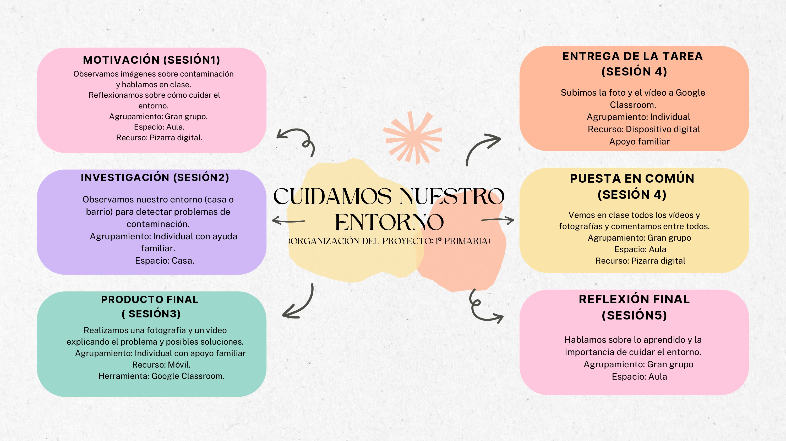

Texto
En este apartado presento la organización del proyecto “Cuidamos nuestro entorno” a través de una línea temporal que recoge de forma visual y estructurada el desarrollo de las diferentes actividades.
A lo largo de esta propuesta he tenido en cuenta aspectos como la distribución temporal de las sesiones, los agrupamientos del alumnado, los espacios de trabajo y los recursos necesarios para llevar a cabo cada una de las tareas. Esta planificación permite ofrecer una visión global del proyecto, facilitando tanto al alumnado como al profesorado la comprensión del proceso de enseñanza-aprendizaje.
Además, he optado por una organización flexible, adaptada a las características del alumnado de 1.º de Educación Primaria, que permite ajustar el ritmo de trabajo según las necesidades que puedan surgir en el aula.
Esta herramienta visual sirve como guía para anticipar las tareas a realizar y comprender el desarrollo del proyecto de manera clara y accesible.
Mapa Mental
